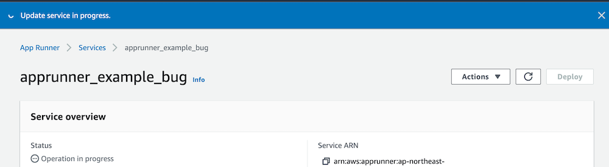
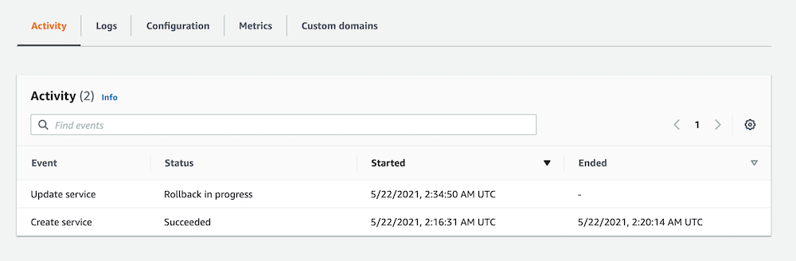

AWS App RunnerをTerraformで
AWS App Runnerがリリースされましたね。 さっそくTerraformでサポートされているようなので試してみます。
このgistに書いたものとほとんど同じです。
ECR Public image を使用する場合
resource "aws_apprunner_service" "apprunner_example" {
service_name = "apprunner_example"
source_configuration {
image_repository {
image_configuration {
port = "80"
}
image_identifier = "public.ecr.aws/nginx/nginx:1.19.10"
image_repository_type = "ECR_PUBLIC"
}
auto_deployments_enabled = false
}
auto_scaling_configuration_arn = aws_apprunner_auto_scaling_configuration_version.apprunner_example.arn
health_check_configuration {
healthy_threshold = 5
interval = 5
protocol = "TCP"
timeout = 1
unhealthy_threshold = 10
}
tags = {
managed_by="terraform"
}
}
# 試しにAuto scalingの設定も作成し、それをApp Runner Serviceに付与したが、指定しない場合にはデフォルトのscalingの設定が使用されます。
# > If you don't provide one, App Runner provides a default auto scaling configuration with recommended values.
# https://docs.aws.amazon.com/apprunner/latest/dg/manage-autoscaling.html
resource "aws_apprunner_auto_scaling_configuration_version" "apprunner_example" {
auto_scaling_configuration_name = "apprunner_example"
max_concurrency = 10
max_size = 10
min_size = 1
}
Amazon ECR Public imageではautomatic deploymentはサポートされていないようです。
App Runner doesn’t support automatic deployment for Amazon ECR Public images. https://docs.aws.amazon.com/apprunner/latest/dg/service-source-image.html#service-source-image.providers.ecrpublic
そのため、App RunnerでECR Public imageを使用する場合にはデフォルトではtrueになっているsource_configuration.auto_deployments_enabledはfalseにします。
(aws providerのaws_apprunner_serviceのExample Usageを見るとECR Public imageで上記の設定をしなくても動くような感じなので引っかかった。)
Terraformのapplyのログからはsource_configuration.auto_deployments_enabledをtrueにして適用した場合、App Runner Serviceの作成に失敗したログからは何が原因かよくわかりません。
Error: error waiting for App Runner Service (arn:aws:apprunner:ap-northeast-1:${aws_account_id}:service/apprunner_example/${app_runner_service_id}) creation: unexpected state 'CREATE_FAILED', wanted target 'RUNNING'. last error: %!s(<nil>)
on main.tf line 161, in resource "aws_apprunner_service" "apprunner_example":
161: resource "aws_apprunner_service" "apprunner_example" {
App Runner Serviceが CloudWatch Logsに書き込むService Logを確認するとAutomatic Deploymentの設定に失敗していることがわかります。
05-22-2021 10:35 AM [AppRunner] Failed to create pipeline for automatic deployments.
05-22-2021 10:35 AM [AppRunner] Service status is set to OPERATION_IN_PROGRESS.
05-22-2021 10:35 AM [AppRunner] Service creation started.
Amazon ECR を使用する場合
まずhttps://docs.aws.amazon.com/ja_jp/AmazonECR/latest/userguide/docker-push-ecr-image.html 等を参考にECRへイメージをプッシュしておきます。
ここでは、apprunner_example というECR repositoryを作成する。 そして、public.ecr.aws/nginx/nginx:1.19.10 のイメージに作成したECR repositoryへプッシュするようのタグをつけてECRへイメージをプッシュします。 イメージをプッシュする前に認証を通す必要があります。
docker image pull public.ecr.aws/nginx/nginx:1.19.10
docker image tag public.ecr.aws/nginx/nginx:1.19.10 ${aws_account_id}.dkr.ecr.${region}.amazonaws.com/apprunner_example:v0.0.1
docker image push ${aws_account_id}.dkr.ecr.${region}.amazonaws.com/apprunner_example:v0.0.1
# IAM Policy for Access role
# AWSAppRunnerServicePolicyForECRAccess managed policyを使っても良さそう。
resource "aws_iam_policy" "apprunner_example_access_role_policy" {
name = "apprunner_example_access_role_policy"
# https://docs.aws.amazon.com/apprunner/latest/dg/security_iam_service-with-iam.html#security_iam_service-with-iam-roles-service.access
policy = jsonencode({
Version = "2012-10-17"
Statement = [
{
Action = [
"ecr:GetDownloadUrlForLayer",
"ecr:BatchCheckLayerAvailability",
"ecr:BatchGetImage",
"ecr:DescribeImages"
]
Effect = "Allow"
Resource = [
"*"
]
},
{
Action = [
"ecr:GetAuthorizationToken",
]
Effect = "Allow"
Resource = "*"
},
]
})
}
# 作成したIAM Policyではなく、AWSAppRunnerServicePolicyForECRAccess managed policyを使っても良さそう。
resource "aws_iam_role_policy_attachment" "apprunner_example_access_role" {
role = aws_iam_role.apprunner_example_access_role.name
policy_arn = aws_iam_policy.apprunner_example_access_role_policy.arn
}
data "aws_ecr_repository" "apprunner_example" {
name = "apprunner_example"
}
resource "aws_apprunner_service" "apprunner_example" {
service_name = "apprunner_example"
source_configuration {
authentication_configuration {
access_role_arn = aws_iam_role.apprunner_example_access_role.arn
}
image_repository {
image_configuration {
port = "80"
}
image_identifier = format("%s:%s",data.aws_ecr_repository.apprunner_example.repository_url,"v0.0.1")
image_repository_type = "ECR"
}
auto_deployments_enabled = false
}
tags = {
managed_by="terraform"
}
}
App RunnerでAmazon ECRのイメージを動かすためにはaccess roleをApp Runner Serviceに指定する必要があります。
上のTerraformでは、IAM Policyを作成したが、AWSAppRunnerServicePolicyForECRAccessというmanaged policyが存在するのでそちらを使っても良いかもしれないです。
その他
CloudWatch Log Group
App RunnerはApp Runner Serviceが作成されるとそれに合わせてService logs, Application logs用のCloudWatch Log Groupを作成する。
それぞれの命名規則は/aws/apprunner/service-name/service-id/service, /aws/apprunner/service-name/service-id/application。service-nameは自分で決められるが、service-idの値はApp Runner側で決められるようなので、CloudWatch Log GroupをTerraformで管理することは難しそう。(もちろんterraform importを行えばTerraformで管理するようにはできるが)
ログの保持期間を指定したり、タグを付与したりするときが少し面倒だなと感じた。
バグっぽい挙動
ECR Public imageでautomatic deploymentを間違えて有効にしてTerraformを適用したときに遭遇した。
ECR Public imageでApp Runner Serviceを作成し、
resource "aws_apprunner_service" "apprunner_example_bug" {
service_name = "apprunner_example_bug"
source_configuration {
image_repository {
image_configuration {
port = "80"
}
image_identifier = "public.ecr.aws/nginx/nginx:1.19.10"
image_repository_type = "ECR_PUBLIC"
}
auto_deployments_enabled = false
}
}
その後 auto_deployment_enabledをtrueにして適用する(本来はECR Public imageではautomatic deploymentはサポートされていない)
resource "aws_apprunner_service" "apprunner_example_bug" {
service_name = "apprunner_example_bug"
source_configuration {
image_repository {
image_configuration {
port = "80"
}
image_identifier = "public.ecr.aws/nginx/nginx:1.19.10"
image_repository_type = "ECR_PUBLIC"
}
auto_deployments_enabled = true
}
}
Terraformを適用してしばらくするとタイムアウトになる。
Error: error waiting for App Runner Service (arn:aws:apprunner:ap-northeast-1:${aws_account_id}:service/apprunner_example_bug/${service_id}) to update: timeout while waiting for state to become 'RUNNING' (last state: 'OPERATION_IN_PROGRESS', timeout: 20m0s)
on main.tf line 224, in resource "aws_apprunner_service" "apprunner_example_bug":
224: resource "aws_apprunner_service" "apprunner_example_bug" {
その後App Runner Serviceの削除や更新がTerraform, AWS Consoleどちらでもできなくなる。
Terraform上で変更ができないログ
Error: error updating App Runner Service (arn:aws:apprunner:ap-northeast-1:${aws_account_id}:service/apprunner_example_bug/${service_id}): InvalidStateException: Service cannot be updated in the current state: OPERATION_IN_PROGRESS.
on main.tf line 224, in resource "aws_apprunner_service" "apprunner_example_bug":
224: resource "aws_apprunner_service" "apprunner_example_bug" {
Terraform上で削除ができないログ
Error: error deleting App Runner Service (arn:aws:apprunner:ap-northeast-1:${aws_account_id}:service/apprunner_example_bug/${service_id}): InvalidStateException: Service cannot be deleted in the current state: OPERATION_IN_PROGRESS.
AWS CosoleでApp RunnerのActivityの項目を見ると以下のようになっている。
| Event | Status | Started | Ended |
|---|---|---|---|
| Update service | Rollback in progress | 5/22/2021, 2:34:50 AM UTC | - |
| Create service | Succeeded | 5/22/2021, 2:16:31 AM UTC | 5/22/2021, 2:20:14 AM UTC |
Statusの項目はOperation in progressとなっている。
もしかしたら本当に実行中のままかもしれないので、しばらく放置しておいて様子を見ることにする。
AWS Consoleでとったスクリーンショット

